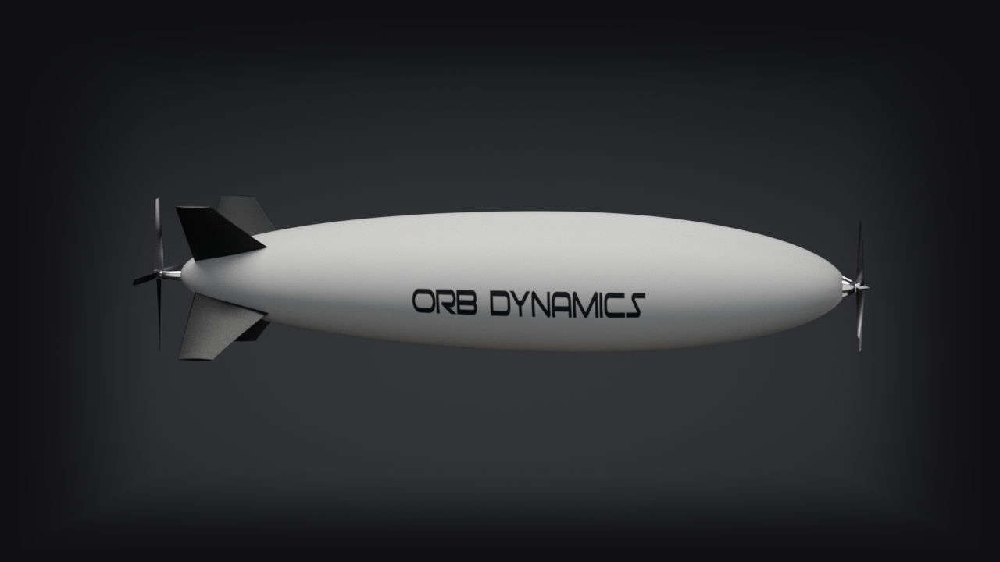

Hydrogen airships for
persistent aerial watch
Autonomous, long-endurance airships that stay on station for a day or more, with detail on the ground.

24 hrs+Endurance
1,000–2,000 kmRange
Zero carbonEmissions
HydrogenSafe by design
One platform, multiple markets
Persistent autonomous watch wherever coverage is thin.
- Wildfire detectionEarly alerts for fire crews
- Infrastructure & governmentPowerlines, pipelines, rail and maritime patrol
- Cargo transportAutonomous middle-mile freight
Hours on watch, per flight
Drones and helicopters have to land and refuel. An airship stays up.
Manufacturer figures. 1DJI 2Quantum Systems 3Airbus